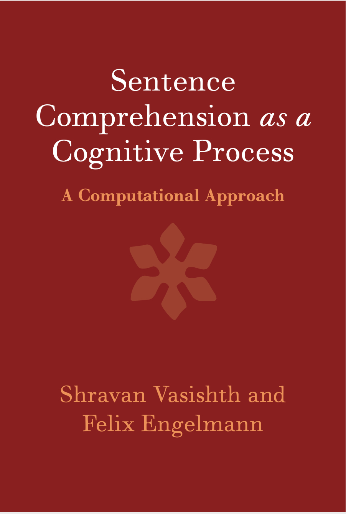

Sentence Comprehension as a Cognitive Process: A Computational Approach (ISBN: 9781107133112
Shravan Vasishth and Felix Engelmann
This web page accompanies a book that has been published by Cambridge University Press (2022). Here, we provide all the code and data that lie behind the modelling presented in the book and the related articles.
@book{VasishthEngelmann2020,
title={Sentence Comprehension as a Cognitive Process: {A} Computational Approach},
author={Vasishth, Shravan and Engelmann, Felix},
isbn={9781107133112},
code = {https://vasishth.github.io/RetrievalModels/},
url={https://books.google.de/books?id=6KZKzgEACAAJ},
year={2022},
publisher={Cambridge University Press},
address = {Cambridge, UK}
}

Funding
This project was funded by the
Volkswagen Foundation (grant 89 953).
Download book source code and data
The github repository behind this page is
here. The book source code is available there.
Instructions for reproducing analyses:
- Clone the repository (if you know how to use github), or download the master directory as a zip archive (if you are unfamiliar with github)
- Download the data.zip directory and place it in the main directory of this repository. Without these data the R code that comes with the book will not work.
- Reproduce the figures and code in the book by running VasishthEngelmannSCCP.R incrementally. Alternatively, compile the whole book by running the bash script run.sh.
Shiny app
This Shiny app provides an untuitive interface to derive quantitative predictions for some standard similarity-based interference designs, using existing data (some 100 experiments' data summaries). Please refresh the page if the Shiny app becomes inactive.
Main references
Shravan Vasishth, Bruno Nicenboim, Felix Engelmann, and Frank Burchert.
Computational models of retrieval processes in sentence
processing.
Trends in Cognitive Sciences, 23:968-982, 2019.
[ DOI |
code |
pdf ]
Felix Engelmann, Lena A. Jäger, and Shravan Vasishth.
The effect of prominence and cue association in retrieval
processes: A computational account.
Cognitive Science, 2020.
[ code |
pdf |
www: ]
The ACT-R implementation (lisp)
The Lewis and Vasishth ACT-R model for sentence processing: lisp code extended by
Felix Engelmann; see
here.
The R implementation (inter-act)
This is an implementation that considerably simplifies the assumptions of the model, and uses R.
Download from
here.
Representative work
-
Bruno Nicenboim and Shravan Vasishth.
Models of retrieval in sentence comprehension: A computational
evaluation using Bayesian hierarchical modeling.
Journal of Memory and Language, 99:1--34, 2018.
[ DOI |
code |
pdf ]
- Paula Lissón, Dorothea Pregla, Bruno Nicenboim, Dario Paape, Mick van het
Nederend, Frank Burchert, Nicole Stadie, David Caplan, and Shravan Vasishth.
A computational evaluation of two models of retrieval processes
in sentence processing in aphasia.
Cognitive Science, 45, 2021.
[ DOI |
code |
http ]
- Paula Lissón, Dario Paape, Dorothea Pregla, Frank Burchert, Nicole Stadie,
and Shravan Vasishth.
Similarity-based interference in sentence comprehension in
aphasia: A computational evaluation of two models of cue-based retrieval.
submitted, 2021.
[ pdf ]
- Himanshu Yadav, Dario Paape, Garrett Smith, Brian W. Dillon, and Shravan
Vasishth.
Individual differences in cue weighting in sentence
comprehension: An evaluation using Approximate Bayesian Computation.
Open Mind, 2021.
Provisionally accepted.
[ pdf ]